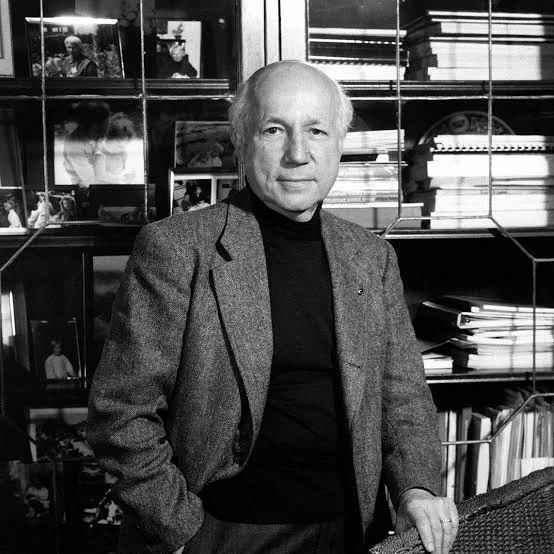
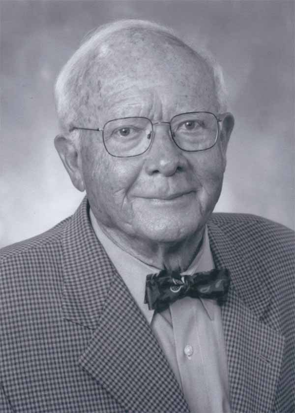
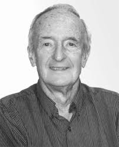

Fase Escura
A fase escura da fotossíntese, também chamada de fase química ou ciclo de Calvin, é a etapa em que o gás carbônico (CO₂) é fixado e transformado em glicose. Ela ocorre no estroma dos cloroplastos e não depende diretamente da luz, mas utiliza o ATP e o NADPH produzidos na fase clara. Esse ciclo foi descoberto pelos cientistas
Melvin Calvin

Melvin Calvin
Bioquímico americano, ganhou o Nobel de Química por descobrir o ciclo das reações da fase escura (Ciclo de Calvin).
,
Andrew Benson

Andrew Benson
Trabalhou com Calvin no mapeamento das reações da fase escura. Contribuiu para o detalhamento do ciclo.
e
James Bassham

James Bassham
Colaborador importante no estudo da assimilação do carbono e nas etapas do ciclo de Calvin.
.
Durante o processo, o tilacoide fornece ATP e NADPH2 ao estroma, onde está presente a pentose ribulose-fosfato, que participa da assimilação do carbono.
Onde acontece:
No estroma dos cloroplastos — o fluido interno que envolve os tilacoides.
Etapas do Ciclo de Calvin:
Fixação do Carbono
A enzima RuBisCO capta moléculas de CO₂ e as une à RuBP, formando compostos de 3 carbonos.
Redução
Com auxílio do ATP e do NADPH, essas moléculas são transformadas em G3P, precursor da glicose.
Regeneração
Parte do G3P é usada para regenerar a RuBP, reiniciando o ciclo.
Equação geral da fase escura:
6 CO₂ + 18 ATP + 12 NADPH → C₆H₁₂O₆ + 18 ADP + 18 Pi + 12 NADP⁺Curiosidades
- A RuBisCO é a enzima mais abundante da Terra.
- Plantas C4 e CAM possuem adaptações da fase escura para climas secos.
- É essencial para transformar CO₂ em compostos orgânicos.
Diferenças entre Fase Clara e Fase Escura
| Característica | Fase Clara | Fase Escura |
|---|---|---|
| Local | Tilacoides | Estroma |
| Depende de luz direta? | Sim | Não diretamente |
| Principais produtos | ATP, NADPH, O₂ | Glicose |
| Entradas | H₂O, luz | CO₂, ATP, NADPH |
A fase escura da fotossíntese converte CO₂ em glicose, utilizando a energia acumulada durante a fase clara. Apesar do nome, ela ocorre durante o dia, enquanto houver ATP e NADPH disponíveis.